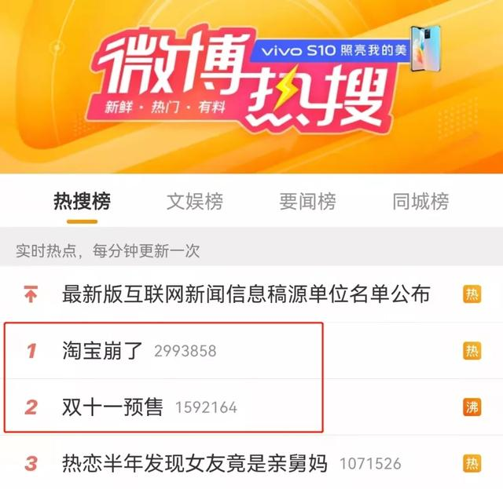
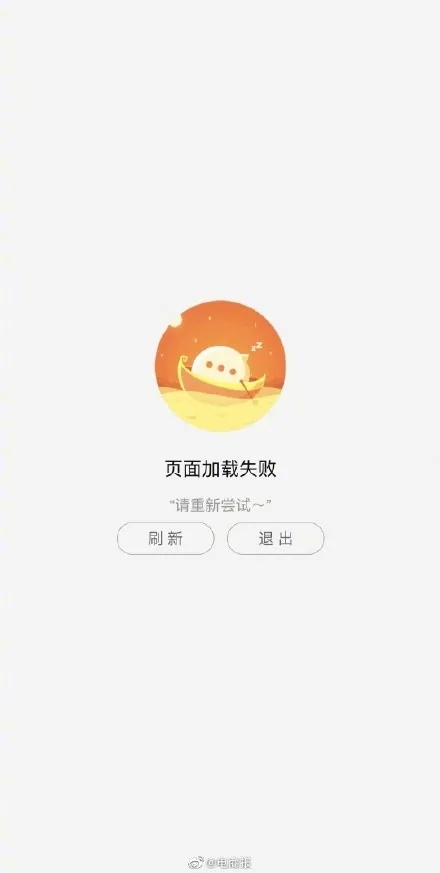
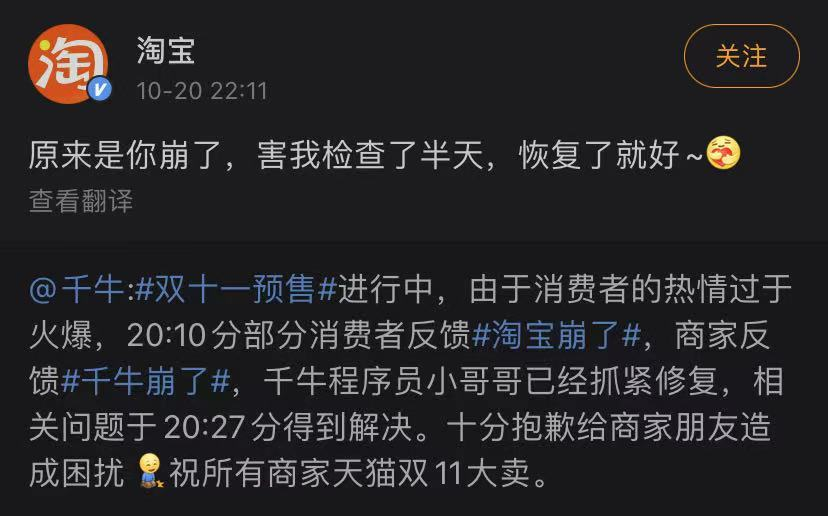
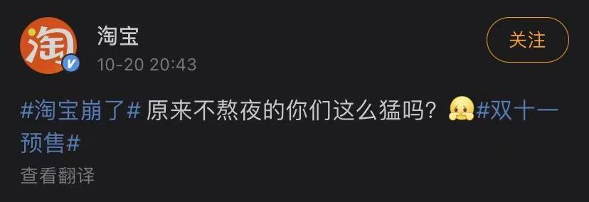

10月20日晚间，#淘宝崩了#和淘宝的“双十一预售”双双登上热搜的第一和第二。
原来，20日晚8点，天猫双11开启预售，共计1400万款商品集体打折，其中1000个品牌旗舰店的爆款商品将全部补贴到5折。
刚刚开始预售，就有网友反映给客服发消息发不出去，有网友称以为是网络问题，5G和wifi都不行。
原来是服务器又崩了。很快，淘宝官方账号在20：43分的时候回复称，原来不熬夜的你们这么猛吗？
 据中国基金报报道，今年的双十一，天猫和京东都将预售提前至10月20日晚上8点，京东11.11高潮也提前至11月10日晚8点开启，消费者不必再战至深夜。 天猫方面表示，用户在双11期间可以买两波，11月1日-3日为第一波，11月11日为第二波购买日。第一波下单的消费者，能提前10天收到货。
同时，凑单门槛则进一步降低，从去年的“每满300-40”降至“每满200-30”。这是天猫双11连续第2年降低满减门槛。
此外，双11期间推出的淘宝购物车一键分享功能。10月12日淘宝推出淘宝长辈版，让银发族参与双11更方便，届时还会上线银发族的专属会场。而那些一路陪伴 双11、已经连续买了12年的双11消费者，将会收到惊喜礼物。
而京东方面，除了低价、价保服务再次成为京东主推的战略焦点之外，京东还赶在双十一之前推出了“小时购”服务。